Travels Abroad
Ostional, Costa Rica
This past summer I had the pleasure of getting to work with BIOMA Travel at the Ostional Wildlife Refuge in Costa Rica. I got to assist their research team during an arribada, a mass synchronized nesting event, of Olive Ridley turtles. My responsibilities included collecting quantiative transect data on turtle abundance and reporting nesting activity during night time patrols. We also researched the ongoing socioeconomic and ecological implications of Ostional’s egg harvesting practices, where the local community joins a conservation association (ADIO) to collect eggs for personal and commercial consumption. We learned how regulated resource use can actually promote the health of the beach, and therefore turtle hatching success, as well as engage the local community in conservation initiatives.
I will never forget the first time I got to see baby turtles hatch and waddle into the water, cutting fishing line off of a turtle’s neck, and seeing thousands of turtles flooding the beach at once. Here are some of my favorite pictures from this once in a lifetime experience:
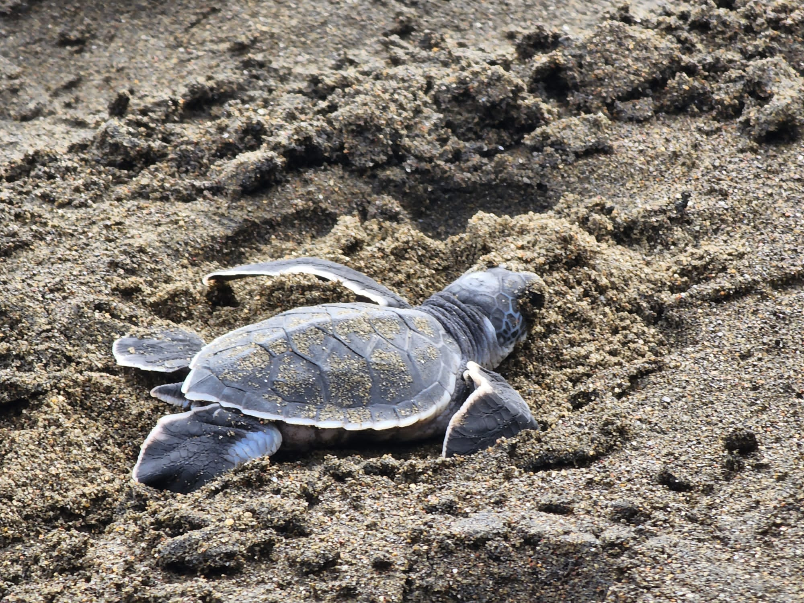
Baby turtle heading towards the ocean.
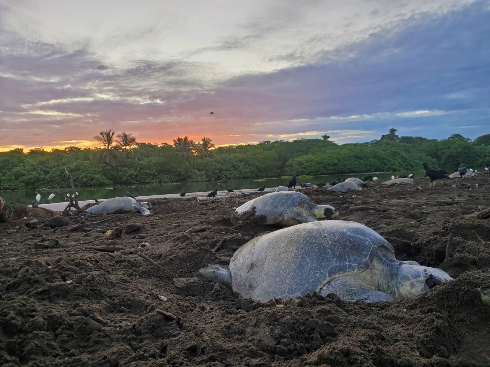
Morning after an arribada. During nighttime patrols this area would have covered with turtles that it was nearly impossible to walk.
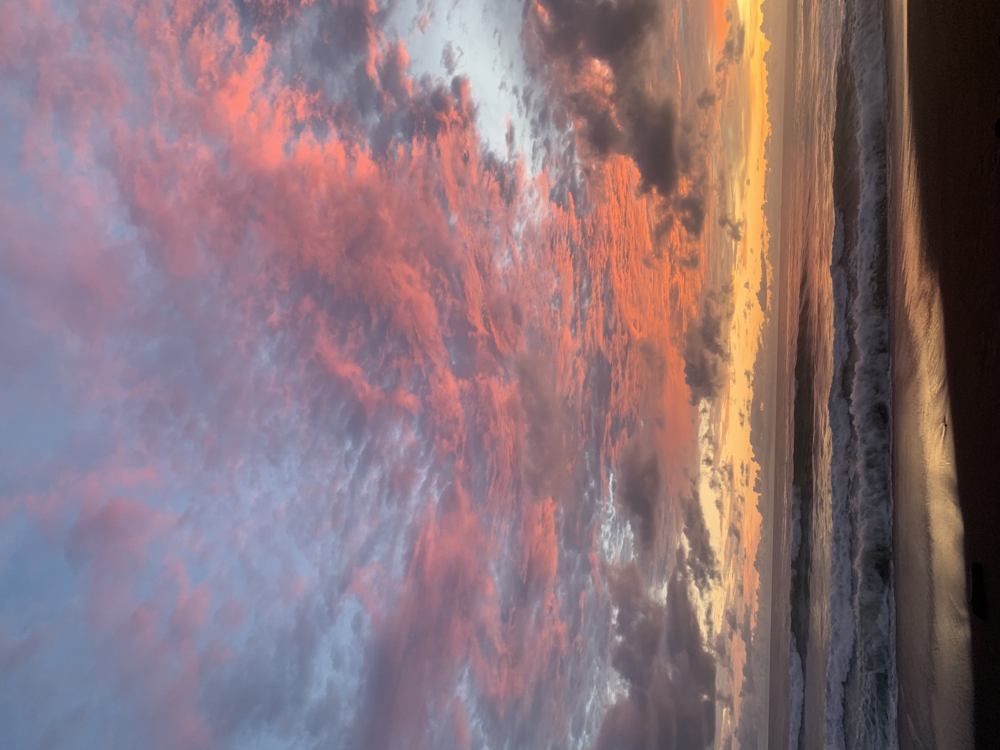
Beautiful sunset that I got to enjoy with my fellow research friends.

Small hidden waterfall located near the town.
Patagonia, Chile
My Wildlands Patagonia Ecosytems Field Study will forever be the most memorable experience of my life. This past winter, I spent 6 weeks backpacking with a group of the best people I have ever met collecting ecological research and learning from local conservationists. For these 6 weeks, we learned, ate, and slept entirely outside. Words can’t even begin to describe how much I learned both educationally and personally as I embarked on this great challenge. We stayed at a variety of places including the lush rainforests of Parque Katalapi, the granite domes of Cochamo Valley, the beautiful beaches of Parque Ahuenco, the barren yet lively Volcanic landscape of Valle Los Ulmos, and the remote Puello Valley. We created field logs at each location, collected data on ecological succession and marine debris, wrote research reports, and presented potential research initiatives. All without a computer! We got to learn all about the local culture, partaking in a lot of asadas, partake in La Minga (where residents of Cochamo pull a house from the estuary to the property of a community member in need), and listening to the stories of everyone we got to work with. When we weren’t doing school we were playing a lot of hackey sack, sing songs and played instruments around the fire, or dancing in the rain. Here are just a few pictures from my time:
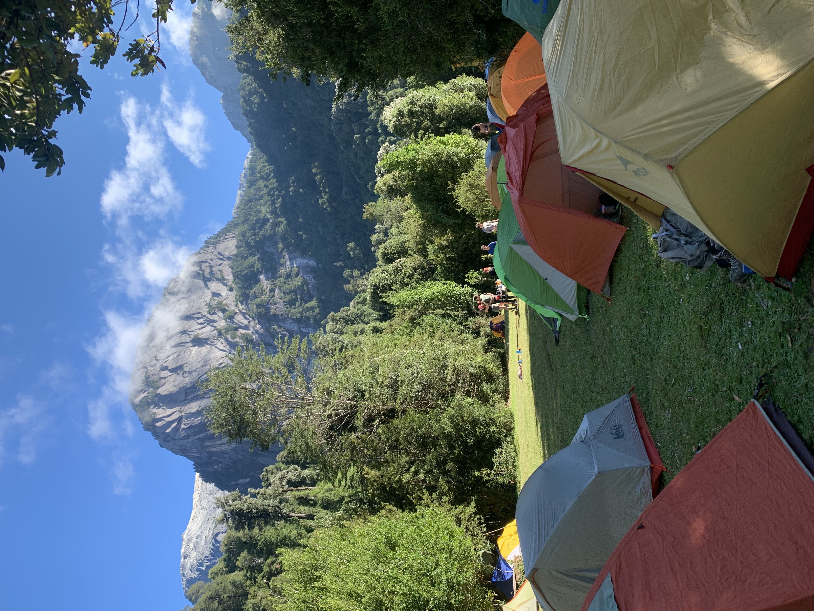
Our campsite at La Junta, Cochamo Valley.
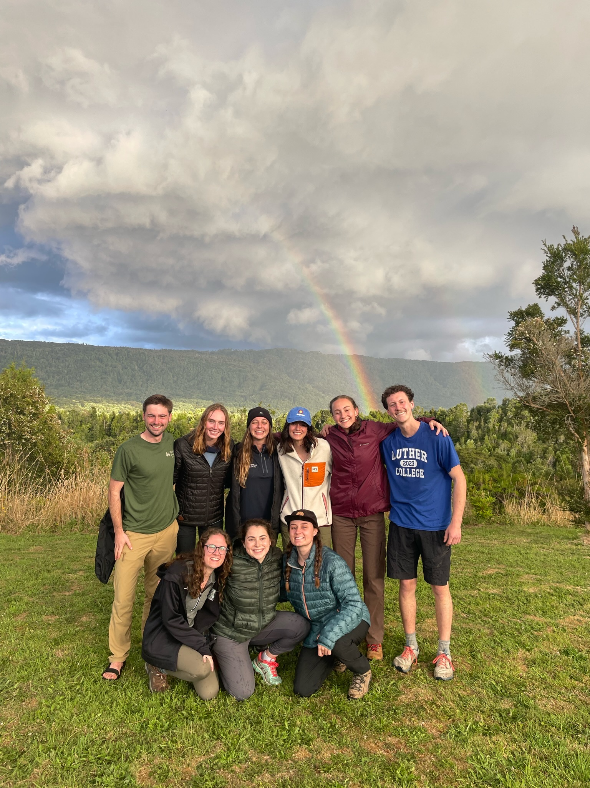
Double rainbow at Parque Katalapi.
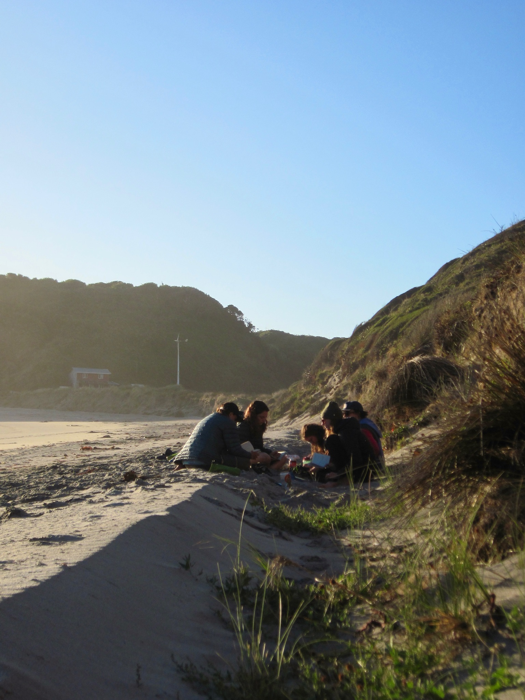
Study session on the beach.

Hiking up the great granite domes of Cochamo Valley.

Taking a swim after a long day of hiking.
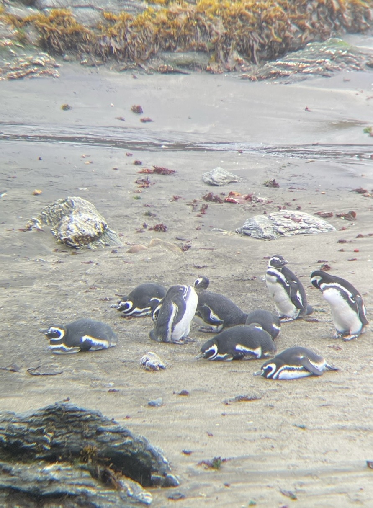
Group of Magellanic Penguins on Chiloe Island.
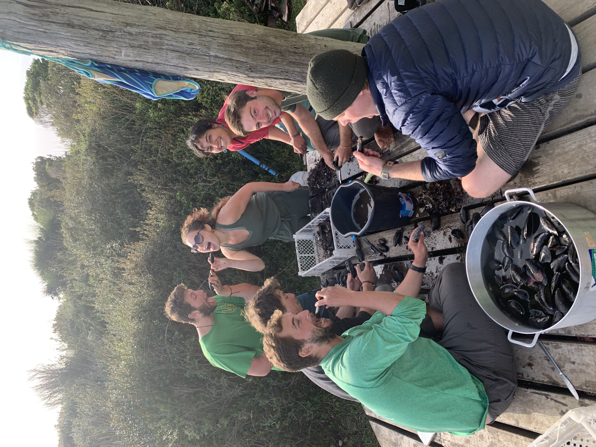
Shucking mussels we collected that morning.
After my time in the Los Lagos region, I set off on a journey that had been on the top of my bucketlist since highschool: Torres Del Paine. My 3 friends and I hiked the approximate 50 miles of the W trek and got to see the most amazing scenery I have ever seen. From there I traveled to El Chalten, Argentina to see the famous Mount Fitz Roy. Here are some of my favorite pictures from my hiking travels:
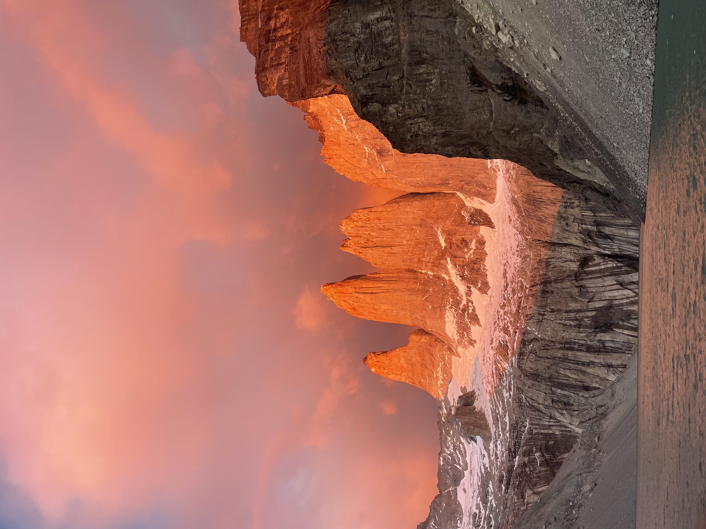
The famous towers of Torres Del Paine at sunrise.
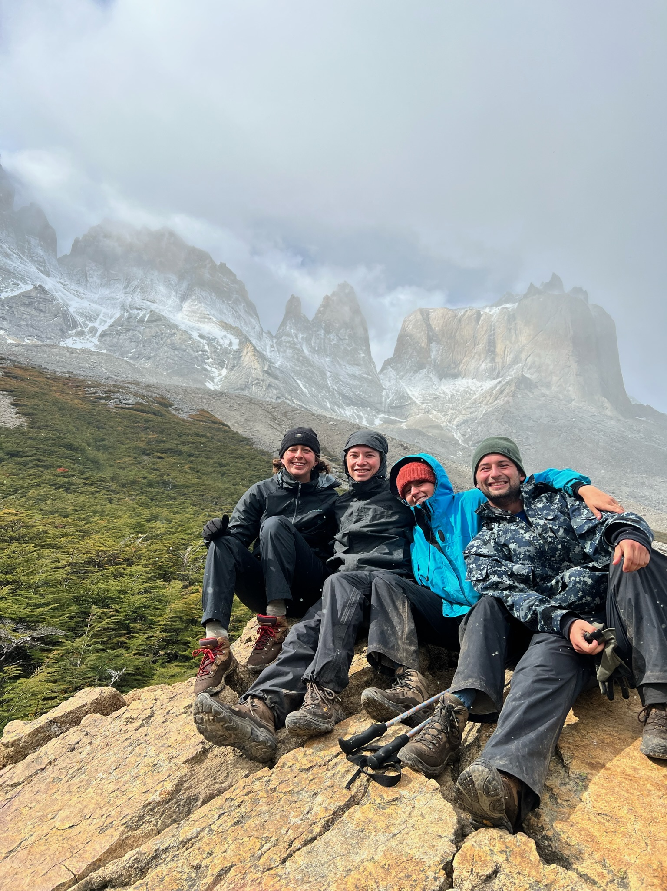
My hiking buddies!
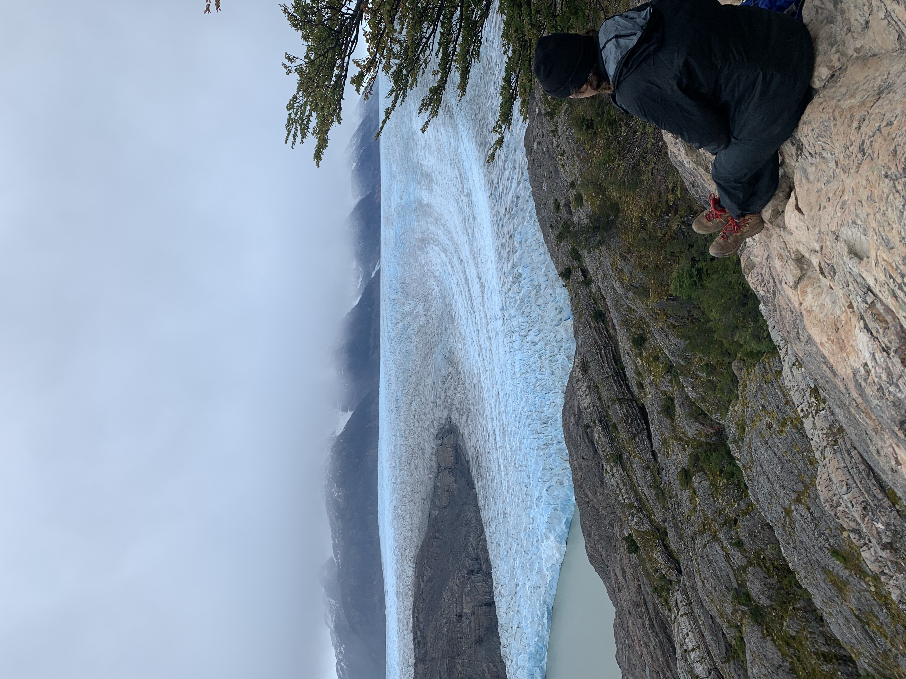
20 mile day hike to see Grey Glacier.
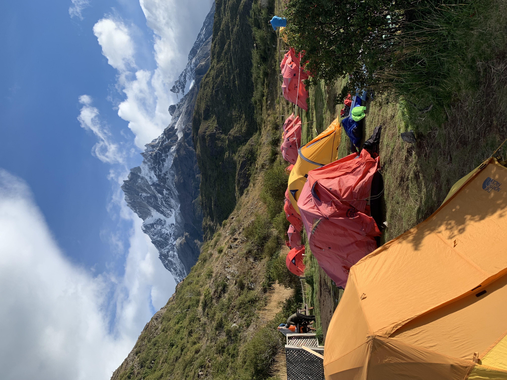
Our campsite at the end of the Trek.
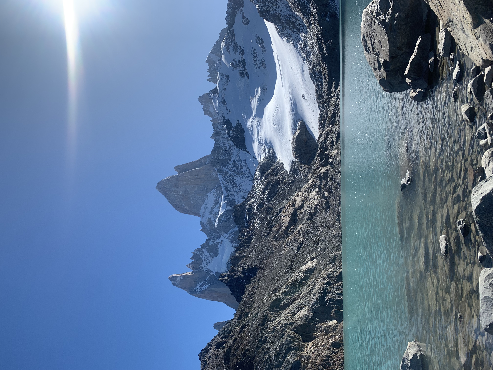
Fitz Roy in El Chalten. My friend and I hopped in this chilly glacier water!
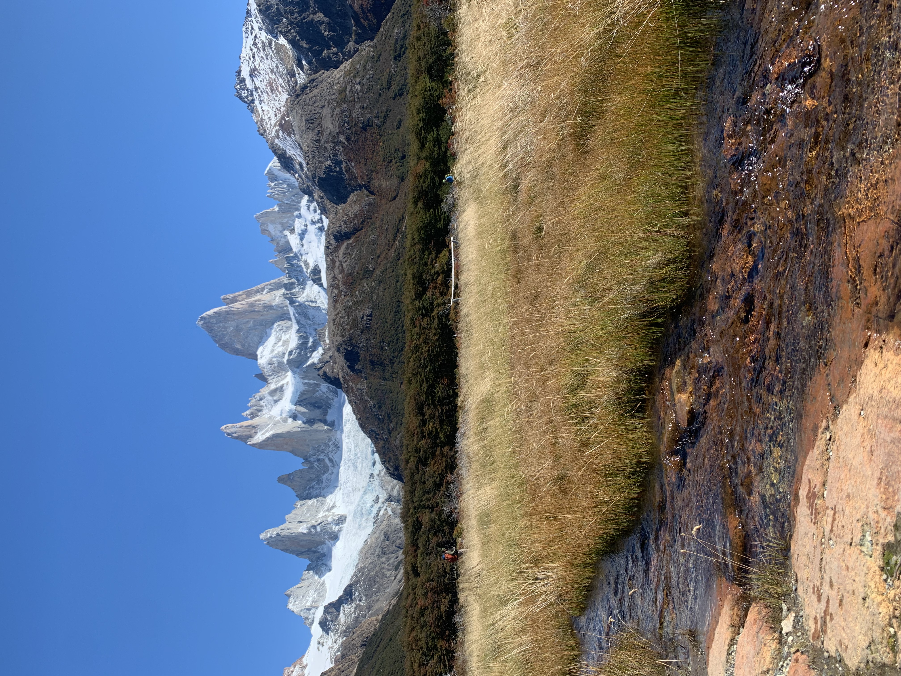
Another view of the hike up to Fitz Roy.
I hope to continue my research endeavors abroad and keep learning from the amazing people all around the world!